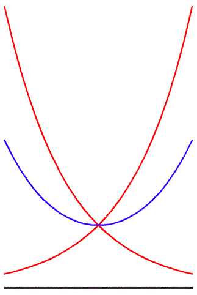
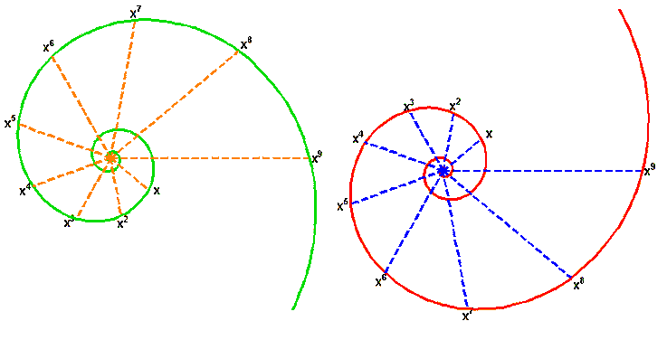
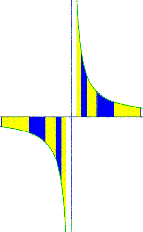
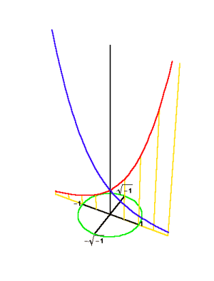
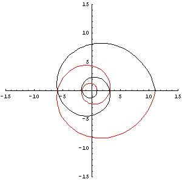
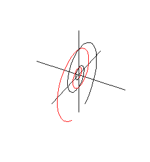
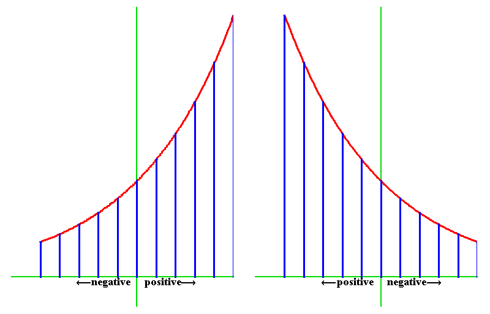

Riemann For Anti-Dummies Part 50
THE GEOMETRY OF CHANGE
In his famous letter to Hugyens concerning his discovery of the significance of the square roots of negative numbers, G.W. Leibniz stated clearly his recognition that this investigation originated with the scientists of ancient Greece: "There is almost nothing more to be desired for the use which algebra can or will be able to have in mechanics and in practice. It is believable that this was the aim of the geometry of the ancients (at least that of Apollonius) and the purpose of loci that he had introduced...."
Understanding the implication of Leibniz' statement is crucial to grasping the deeper significance of Gauss' 1799 treatment of the fundamental theorem of algebra.
Leibniz' statement will either baffle, or enrage, a modern academic, but such reactions only typify a broader social disease the inability, as LaRouche has repeatedly emphasized, to recognize the essential difference between human and beast. Like any disease, this one spreads through infectious agents that attack the defenses of the victim, causing the victim's own system to act as an agent for the aggressor. The cure for such conditions is to strengthen the targeted population's natural immunities, enabling them, not only to fight the disease, but to become permanently resistant to its effects. In this case, those natural immunities are the cognitive powers of the human mind. Hence, the therapeutic effects of pedagogical exercises and classical art.
What Leibniz, Gauss, and their ancient predecessors understood, is that the essential distinction between man and animal is the capacity of the human mind to reach behind the domain of the senses and discover those unseen principles that govern the changes perceived in the physical universe. However, being unseen, those principles can only be discovered through changes (motions) within the domain of the senses, which in turn give rise to paradoxes concerning the relationship of the seen to the unseen. Consequently, it is the coupled interaction between the seen and the unseen that must be comprehended. Physical motion gives rise to the willful motion (passion) of the mind from one state to a higher one. As Leibniz indicates, no formal system, such as algebra or Euclidean geometry, is capable of representing this characteristic of change that emerges from the interaction between the seen and the unseen. Only a geometry of change, such as the pre-Euclidean "spherics" of Thales and the Pythagorean school, the geometry of motion associated with Archimedes, Eratosthenes, and Apollonius, Leibniz' infinitesimal calculus, or Gauss' concept of the complex domain, has such power.
Just as the origins of the discovery of the complex domain begin in the ancient Mediterranean cultures of Egypt and Greece, so do the roots of its adversary. The mode of attack has been to induce the false belief that the physical world which is seen, and the immaterial world which is unseen, do not interact, but are hermetically separated. This belief is typified by the mystery cults of ancient Babylonian and Persian cultures. The Eleatics, (such as Parmenides and Zeno) sought to introduce this corruption into Greek culture, against Heraclites and the Pythagoreans, by insisting that change is merely an illusion and does not exist. (fn. 1)
Socrates made mincemeat of Parmenides' Eleatic argument, so those who would today be called satanic, switched tactics, expressing the same evil intent through forms of Sophistry, such as admitting that change exists, but then arbitrarily defining change as the opposite of the Good and defining the Good as that which does not change and is not corrupted by change.
After Plato discredited the trickery of Sophistry, Aristotle, while distancing himself formally from the Sophists, nevertheless propounded the same evil in a new guise. For example, writing in his "Nichomachean Ethics", Aristotle said :
"This is why God always enjoys a single and simple pleasure; for there is not only an activity of movement but an activity of immobility, and pleasure is found more in rest than in movement. But change in all things is sweet, as the poet says, because of some vice; for as it is the vicious man that is changeable, so the nature that needs change is vicious; for it is not simple nor good."
Aristotle adopted this same view towards physical motion, stating in his "Physics" that motion originates only from within a body, and that irregular motion, because it contains more change, is of a lesser degree than regular motion, which is of a lesser degree than rest.
Like the Sophists and the Eleatics, Aristotle was not developing an original argument, but reacting against Plato's repeated demonstration that the material and the immaterial are coupled:
" for this creation is mixed being made up of necessity and mind. Mind, the ruling power, persuaded necessity to bring the greater part of created things to perfection, and thus and after this manner in the beginning, when the influence of reason got the better of necessity, the universe was created." (Timaeus).
And it is the power to gain knowledge of the universe through the interaction of the seen with the unseen, the temporal with the eternal, that is human nature. Change is a characteristic, not of viciousness and vice, but of perfection:
"But, now the sight of day and night, and the months and revolutions of the years, have created number, and have given us a conception of time and the power of enquiring about the nature of the universe; and from this source we have derived philosophy, than which no greater good ever was or will be given by the gods to mortal man...God invented and gave us sight to the end that we might behold the courses of intelligence in the heaven, and apply them to the courses of our own intelligence which are akin to them, the unperturbed to the perturbed; and that we, learning them and partaking of the natural truth of reason, might imitate the absolutely unerring courses of God and regulate our own vagaries. The same may be affirmed of speech and hearing;...Moreover, so much of music as is adapted to the sound of the voice and to the sense of hearing is granted to us for the sake of harmony; and harmony, which has motions akin to the revolutions of our souls, is not regarded by the intelligent votary of the Muses, as given by them with a view to irrational pleasure, which is deemed to be the purpose of it in our day, but as meant to correct any discord which may have arisen in the courses of the soul, and to be our ally in bringing her into harmony and agreement with herself; and rhythm too was given by them for the same reason, on account of the irregular and graceless ways which prevail among mankind generally, and to help us against them." (Timaeus.)
The tension of this Socratic irony, of the unchanging principles of change, is the means by which man, and the universe as a whole, perfects itself. As Kepler notes in the "New Astronomy", it is the tension from the discovery that the planetary orbits are not circular, "that gives rise to a powerful sense of wonder which at length drives men to look into causes."
Remove that tension, as Aristotle, Euler, Lagrange, et al., do, and you excise from Man his human nature, rendering him defenseless against those oligarchical forces who seek to enslave him.
The Square Root of -1 and Motion
Putting aside the problem of the passionless, (or more likely enraged) committed Aristotelean, a persistent difficulty arises for those wishing to comprehend Gauss' discovery of the complex domain. The difficulty centers on grasping the physical significance of the square root of -1. For Euler, Lagrange, and D'Alembert, the square root of -1 is merely a passionless definition of the solution to the equation x^2+1=0. All tension associated with its existence is removed by the declaration that it is a definition of something that is "impossible". "What, Me Worry about the impossible?"
The difficulty for the serious person who seeks to grasp the idea of the square root of -1, arises from the embedded habits to begin with a set of axioms, postulates and definitions, that are indifferent to the physical universe; then to arrive, through a series of logical steps, at the square root of -1; and from there search for some physical significance of this logically defined number.
All such efforts, are, as LaRouche used to say, " like trying to milk a he-goat with a sieve."
As Gauss emphasized, the square root of -1 signifies a physical principle--one which he said, "has the deepest implications for the metaphysics of the theory of space." As a study of Gauss' early notebooks reveals, his development of the complex domain arose from the paradoxes of the "Kepler Problem" that remained un-resolved by Leibniz' infinitesimal calculus. (See Riemann for Anti-Dummies Part 49.) Keeping that in mind, along with what was said above, the physical significance of the square root of -1 can be demonstrated, as Leibniz indicated, by conceptualizing the unified succession of discoveries from Pythagoras through Gauss. It is only through this ironical, polyphonic approach, that insights into the physical significance of the square root of -1 can be obtained.
This can be done quite efficiently if one has mastered the general principles expressed by the discoveries of the doubling of the square and cube and the catenary.
Put aside all formal algebraic conceptions, along with those fixed Euclidean-type notions of geometry. Look at these discoveries from the standpoint of motion.
The discovery that the square is doubled (or halved) by a different principle than a line, is indicated by Pythagoras' determination of the incommensurability between the side of a square whose area is one and the side of a square whose area is two. This relationship determines a new type of magnitude, that which like all numbers, is not susceptible to formal definition, outside the physical relationship from which it originates. In other words, the square root of 2 is not the number 1.14142135..., but a magnitude that exists only within the physical relationship of two squares whose areas are in the proportion of 1:2.
As Plato reports in the Theatetus, this magnitude is only a special case of a whole class of magnitudes, that can be characterized as the relationship of one geometric mean between two extremes.
This whole class of magnitudes, however, can be generated by one type of physical motion, specifically, circular action.
However, an entirely new type of magnitude emerges when doubling the cube. As Plato stated in the Timaeus, if God had created the world flat, it would only be necessary to have one mean between two extremes, but God created the world solid, so it is always necessary to find two.
As Archytas' construction demonstrates, this new type of magnitude cannot be generated by circular action, but requires circular action acting orthogonally on circular action. This action on action is what generates the torus, cylinder and cone of Archytas' famous construction. Subsequently, Menaechmus and Apollonius demonstrated the more general form of the principle of Archytas' construction through the development of conics. For them, as well as Archimedes, Eratosthenes, et al., it was this higher type of physical action, expressed by motion acting on motion, that generated the relationships that are manifest in solid bodies such as squares and cubes. Contrary to Aristotle, motion doesn't originate in bodies. Bodies originate in motion.
To repeat: the magnitudes associated with one geometric mean between two extremes are a species of magnitudes generated by one principle of motion, i.e. circular action, and the magnitudes associated with two geometric means are a species of magnitudes generated by another class of motion, i.e. conical action.
However, as Leibniz and Bernoulli indicated, the latter type of motion, (conical) actually generates a class of classes of magnitudes. Each separate class is characterized by the number of means between two extremes and is identified with a specific type of power. (For example the fourth power requires three geometric means between two extremes, the fifth power four geometric means, etc.)
Such magnitudes Leibniz called "algebraic", or alternatively, "algebraic powers". Magnitudes associated with the higher, class of classes, Leibniz called "transcendental". These transcendental magnitudes exist outside the domain of the algebraic. Nevertheless, the two are connected because the higher transcendentals generate the lower algebraic. As Leibniz states, the transcendentals are the ones that express the relationships that arise within the physical universe.
The physical significance of the first two classes of algebraic powers, squares and cubes, is evident from the problems of Pythagoras and Archytas. What is the physical significance of the motion that generates the entire class of algebraic powers?
That significance is found in Leibniz' solution to the catenary problem. As an expression of the principle of least-action, the catenary is the form of a hanging-chain that is motionless. But, as Leibniz demonstrates, the chain's stillness reflects motion the motion which generates the higher transcendental magnitudes. In the case of the catenary, that motion is expressed as two exponential curves. (See Figure 1.)
Figure 1  |
The visible catenary, Leibniz shows, is the arithmetic mean between two exponential curves. But that is only half the story. To paraphrase Plato from the Timaeus, since God made the catenary with two exponentials, what is the nature of the mean that binds them. Or, in other words, what physical action produces two exponentials, together?
An insight can be gained by looking at the other expressions of the exponential relationship, such as the hyperbola, and the logarithmic spiral. In all three cases, there are two distinct forms, left-handed and right-handed. (See Figure 2a, and Figure 2b.) These two forms can not be transformed one into the other within the plane of their visible existence.
Figure 2a  |
Figure 2b  |
But as the catenary demonstrates, the physical universe is happy only when both forms are united into one. What is the nature of the species of motion that unites both left and right handed exponentials?
That motion is a rotation orthogonal to the visible plane of the two curves. (See Animation 1, Animation 2, and Animation 3.) These animations are included for illustration purposes. It is strongly recommended that physical models of this motion be built.)
Animation 1  |
Animation 2  |
Animation 3  |
This is the action that Gauss understood as the physical action that gives rise to the square root of -1. To see this, look at one of the exponentials. It generates all the algebraic powers, increasing in one direction and decreasing in the other direction. (See Figure 3.) Now look at the other exponential. It does the same thing. But, the direction in which one increases, the other decreases and vice versa. From this standpoint the two are mutually exclusive.
Figure 3  |
Yet, the catenary binds them both. If, as Gauss did, we designate one exponential as positive and the other as negative, then the two are bound by the geometric mean between 1 and - 1, or the square root of -1.
Does the square root of -1 physically exist. Just ask the catenary.
Can it be seen?
Yes. But, only by humans. not by animals or Aristoteleans.
fn 1. Bertrand Russell and today's proponents of "information theory" describe themselves as being in the tradition of the Eleatics.
{kind=link}
{kind=link}
{kind=link}
{kind=link}
{kind=link}